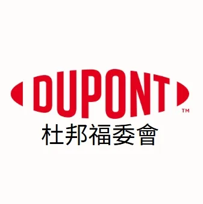
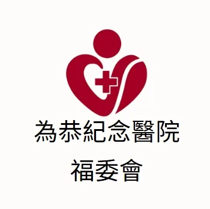

員工福利
讓員工能在日常餐飲、購物、休閒與生活服務中使用頭份、竹南、苗栗在地優惠。
讓員工能在日常餐飲、購物、休閒與生活服務中使用頭份、竹南、苗栗在地優惠。
協助學校、社團或校友單位導入生活型福利資源與合作店家查詢入口。
用清楚入口與可查詢資料，降低福利資源整理與溝通成本。
串連企業、學校與醫療體系，讓員工與師生更容易使用在地優惠資源。

杜邦企業夥伴

為恭醫療體系
校園合作
企業、學校與福委會導入頭竹苗福利資源前，可先了解合作方式。
企業、學校或福委會可洽詢頭竹苗福利社，評估員工福利需求，導入頭份、竹南、苗栗合作店家與福利卡優惠查詢入口。
員工可透過數位福利卡與特約商店查詢頁，依地區、分類或關鍵字找到在地優惠與合作店家資訊。
適合。學校、醫療體系與大型單位可整合師生、員工或會員福利，讓福利資源更貼近日常生活。
可透過企業合作頁的洽詢入口聯繫頭竹苗福利社，了解企業福委福利整合與在地優惠導入方式。